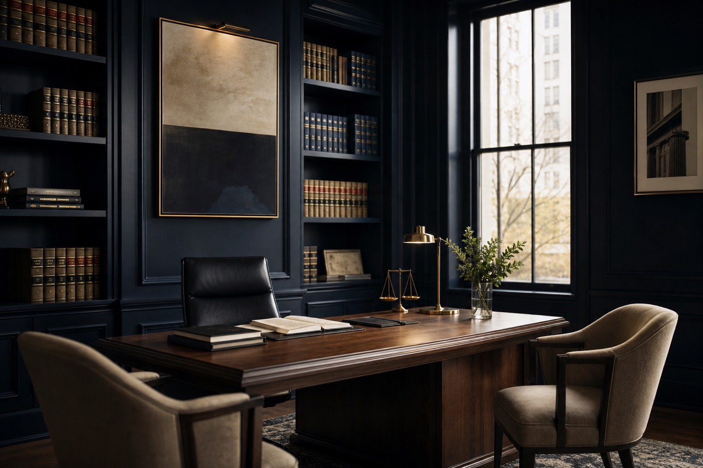

20+
Lat praktyki, które przekładają się na pewne decyzje
Łączymy doświadczenie procesowe z rzetelnym doradztwem na co dzień. Klient otrzymuje nie tylko opinię prawną, ale także realny plan działania i ocenę ryzyk.
Kompleksowa obsługa prawna dla firm i klientów indywidualnych w Rzeszowie i regionie.
Kancelaria Prawna Zawadzcy i Wspólnicy działa od ponad 20 lat, łącząc doświadczenie w prawie cywilnym, gospodarczym, rodzinnym i spadkowym z indywidualnym podejściem do każdej sprawy. Prowadzimy sprawy dla firm i klientów indywidualnych, zawsze z jasnym planem działania i przejrzystymi zasadami rozliczeń.

Łączymy doświadczenie procesowe z rzetelnym doradztwem na co dzień. Klient otrzymuje nie tylko opinię prawną, ale także realny plan działania i ocenę ryzyk.
Reprezentujemy klientów w postępowaniach sądowych, doradzamy przedsiębiorcom i pomagamy w sprawach wymagających precyzji, dyskrecji oraz sprawnego prowadzenia.
Analiza roszczeń, przygotowanie pism procesowych i reprezentacja na każdym etapie postępowania.
Bieżące doradztwo, umowy, negocjacje, windykacja należności oraz wsparcie w decyzjach biznesowych.
Rozwody, podział majątku, alimenty i sprawy wymagające stanowczości połączonej z taktem.
Nabycie spadku, zachowek, testamenty oraz uporządkowanie spraw majątkowych po bliskich.
Wsparcie przy zakupie, sprzedaży i zabezpieczeniu transakcji, także przy bardziej złożonych stanach prawnych.
Weryfikacja dokumentów, ryzyk i zobowiązań przed istotnymi transakcjami oraz decyzjami inwestycyjnymi.
Nie opisujemy każdej sprawy, bo większość obejmuje tajemnica zawodowa. Poniżej cztery reprezentatywne — pokazują sposób prowadzenia i rezultat, bez danych pozwalających zidentyfikować strony.
Zastrzeżenie: powyższe sprawy mają charakter ilustracyjny i zostały pozbawione danych identyfikujących. Rezultat każdej sprawy zależy od jej indywidualnych okoliczności — wcześniejsze wyniki nie stanowią gwarancji podobnego rozstrzygnięcia w innej sprawie.
Dla części klientów sama wiadomość, że rozmawiają z prawnikiem, jest informacją wrażliwą. Dlatego zasady obowiązują od pierwszego kontaktu, a nie od podpisania umowy.
Obejmuje także bezpłatną konsultację — również wtedy, gdy nie dojdzie do współpracy. Nie wolno nam ujawnić nawet tego, że się Państwo z nami kontaktowali.
Materiały odbieramy osobiście lub zabezpieczonym kanałem. Nie prosimy o przesyłanie umów i danych wrażliwych zwykłym mailem ani przez czat na stronie.
Przed przyjęciem sprawy weryfikujemy, czy nie prowadzimy sprawy strony przeciwnej. Jeśli tak — mówimy to od razu i wskazujemy inną kancelarię.
Każdy adwokat i radca prawny w zespole podlega obowiązkowemu ubezpieczeniu odpowiedzialności cywilnej oraz nadzorowi swojej izby zawodowej.
Relacje z klientami budujemy na dostępności, rzetelnej informacji i konsekwentnym prowadzeniu sprawy. Poniższe opinie mają charakter ilustracyjny i pokazują standard współpracy, do którego dążymy.
„Sprawa spadkowa, która ciągnęła się latami u innej kancelarii, tutaj została domknięta w 6 miesięcy. Pełen profesjonalizm.”
„Stała obsługa naszej firmy od 3 lat — zawsze szybka odpowiedź i jasne rekomendacje.”
Rozmawiamy o sytuacji, porządkujemy najważniejsze fakty i wskazujemy możliwe kierunki działania bez zobowiązań.
Przed rozpoczęciem sprawy przedstawiamy zasady współpracy, przewidywany zakres działań i sposób rozliczeń.
Klient na bieżąco otrzymuje informacje o postępach i kolejnych krokach, bez niepotrzebnej niepewności.
Pełny opis procesu i cennika znajdziesz na dedykowanej podstronie.
Proces i cennikPierwsza konsultacja jest bezpłatna. To dobry moment, aby spokojnie poznać swoje opcje i zdecydować o kolejnych krokach.
kontakt@zawadzcy-kancelaria.pl
ul. Sloneczna 14, 35-020 Rzeszow · Pokaż na mapie
Odpowiedzi mają charakter ogólnej informacji i nie stanowią porady prawnej. Stanowisko w Twojej sprawie zajmiemy po zapoznaniu się z dokumentami. Nie podawaj tutaj danych osobowych ani szczegółów objętych tajemnicą.